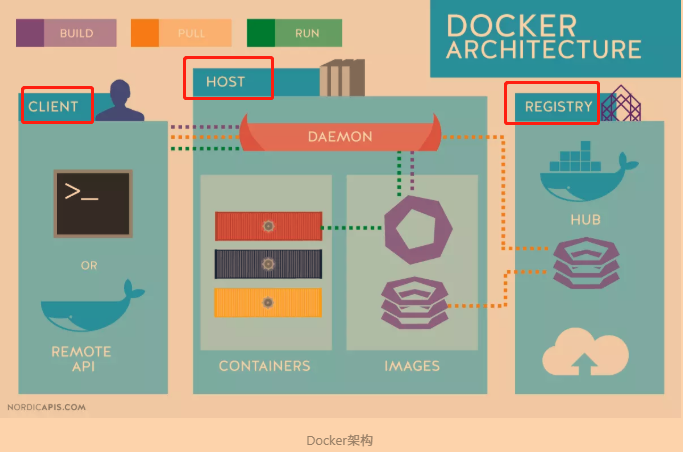
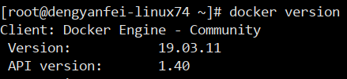
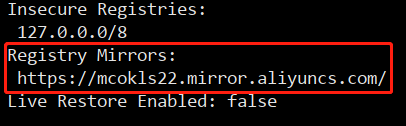
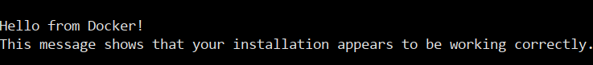
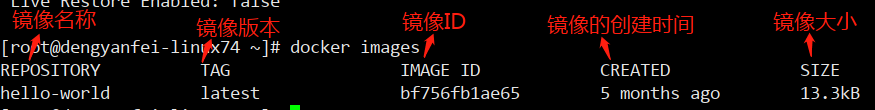
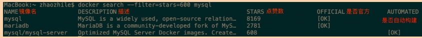
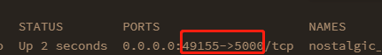
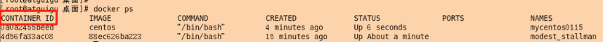
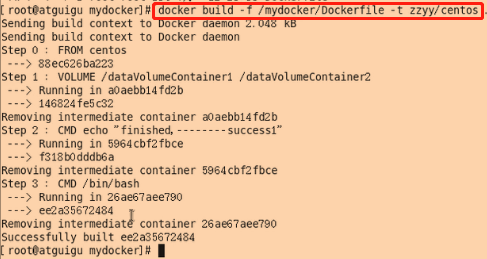
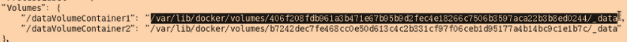

本文最后更新于：2020年6月28日 上午
Docker–学习笔记(包含Docker视频)
Lesson1 Docker概述
NO1.1 Docker简介
Docker是一个开源的应用容器平台，通俗的讲Docker就如同它的那个鲸鱼Logo一样，只要下载了Docker这个容器平台，那么那些打包好了的“集装箱”就能在安装了Docker的电脑上使用。
- Docker：
- 出现原因：软件开发最大的麻烦事之一，就是环境配置。用户计算机的环境都不相同，你怎么知道自家的软件，能在哪些机器上跑起来？用户必须保证两件事：操作系统的设置，各种库和组件的安装。只有它们都正确，软件才能运行。所以说，环境配置如此麻烦，换一台机器，就要重来一次，旷日费时。很多人想到，能不能从根本上解决问题，软件可以带环境安装？也就是说，安装的时候，把原始环境一模一样地复制过来。由此，虚拟技术应运而生，先是LXC容器技术，然后再是Docker；
- 背景介绍：Docker是一个开源项目，诞生于2013年初，最初是dotCloud公司内部的一个业余项目，基于Google公司的Go语言实现，项目后来加入Linux基金会，遵从Apache2.0协议，项目代码在Github上维护；
- 定义：Docker是一个开源的应用容器引擎，通俗的讲Docker就如同它的那个鲸鱼Logo一样，只要下载了Docker这个容器引擎，那么那些打包好了的“集装箱”就能在安装了Docker的电脑上使用；
- 目标：实现轻量级的操作系统虚拟化解决方案。Docker的基础是Linux容器(Linux Containers，缩写为LXC)等技术，在LXC基础上Docker做了进一步的封装，让用户不需要关心容器的管理，使得操作更为简便。用户操作Docker容器就像操作一个快速轻量级的虚拟机一样简单；
- 作用：
- 提供一次性的环境。
如，本地测试他人的软件、持续集成的时候提供单元测试和构建的环境； - 提供弹性的云服务。因为Docker容器可以随开随关，很适合动态扩容和缩容；
- 组建微服务架构。通过多个容器，一台机器可以跑多个服务，因此在本机就可以模拟出微服务架构。
- 提供一次性的环境。
- Docker和虚拟机的区别：
- 表面区别：
- 内存占用：容器占用体积小，虚拟机占用体积大；
- 隔离性：容器提供了基于进程的隔离，而虚拟机提供了资源的完全隔离；
- 启动速度：虚拟机可能需要一分钟来启动，而容器只需要一秒钟或更短；
- 容器使用宿主操作系统的内核，而虚拟机使用独立的内核。Docker的局限性之一是，它只能用在64位的操作系统上。
- 本质区别：
- 容器是被隔离的进程。
- 表面区别：
NO1.2 Docker三大核心组件
Docker的核心组件有三个。
- Docker核心组件：
- Docker仓库(registeries)：用来保存镜像的仓库。Docker仓库分为公开仓库和私有仓库；最大的公开仓库是Docker Hub，但是这个太慢，所以一般用的都是阿里云或网易云的镜像公开仓库；
- Docker镜像(images)：就是一个只读的模板。镜像可以用来创建Docker容器，一个镜像可以创建多个容器；就跟Java的类一样，一个类可以创建出许多个对象一样；
- Docker容器(containers)：就是Docker镜像运行的一个或多个实例。
NO1.3 Docker架构
Docker使用C/S架构，Client通过接口与Server进程通信实现容器的构建，运行和发布。

Docker架构包括三个部分：
Host(Docker 宿主机)：即安装了Docker程序，并运行了Docker daemon的主机。包括：
- Docker daemon(Docker 守护进程)：运行在宿主机上，Docker守护进程，用户通过Docker client(Docker命令)与Docker daemon进行交互；
- Images(镜像)：将软件和软件运行所需要的环境打包好的模板，用来创建容器的，一个镜像可以创建多个容器；
- Containers(容器)：Docker的运行组件，启动一个镜像就是一个容器，容器与容器之间相互隔离，并且互不影响；简单讲容器其实就相当于一个超迷你型的CentOS，里面安装了你想要使用的软件和运行软件的环境，只不过这个CentOS没有那么多东西，所以轻量便捷。
Docker Client(Docker 客户端)：Docker命令行工具，用户使用Docker Clients与Docker daemon进行通信并返回结果给用户。也可以使用其他工具通过Docker Api与Docker daemon通信。
Registry(仓库服务注册器)：经常会和仓库(Repository)混为一谈，实际上Registry上可以有多个仓库，每个仓库可以看成是一个用户， 一个用户的仓库放了多个镜像。仓库分为了公开仓库(Public Repository)和私有仓库(Private Repository)，最大的公开仓库是官方的Docker Hub，国内也有如阿里云、时速云等，可以给国内用户提供稳定快速的服务。用户也可以在本地网络内创建一个私有仓库。当用户创建了自己的镜像之后就可以使用push命令将它上传到公有或者私有仓库，这样下次在另外一台机器上使用这个镜像时候，只需要从仓库上pull下来就可以了。
NO1.4 Docker安装
要想使用Docker，必须先安装Docker，但是Docker只支持CentOS6.5以上的版本，因为我这里安装的是CentOS7.x，所以只以这个版本为例。
CentOS7.x的安装：
首先，要安装Docker的一些依赖包(如果已经安装了的，会自动更新到最新)：
- 安装命令：
sudo yum install -y yum-utils device-mapper-persistent-data lvm2，其中sudo是指允许已验证的用户以其他用户的身份来运行命令，简单讲就是提升权限的意思。然而，大部分时候我们用它来以提升的权限来运行命令。如果已经在root用户下就可以不用加sudo；yum-config-manager --add-repo https://mirrors.aliyun.com/docker-ce/linux/centos/docker-ce.repo，设置阿里云镜像，意思就是从阿里云的服务器下载docker等一些需要的安装包。
- 安装命令：
依赖包安装完毕后，就可以安装Docker了：
安装命令：
sudo yum install docker-ce，这是安装docker的命令；docker version，出现如图1.4.1docker版本信息，说明就安装成功了。
图1.4.1
NO1.5 Docker启动
安装完成了Docker，现在就可以启动Dicker服务了。
- 安装完Docker之后，启动Docker：
- 启动命令：
sudo systemctl enable docker，这是开机自启的命令；sudo systemctl start docker，这是启动docker服务。
- 启动命令：
安装好Docker以后，我们就可以从Docker Hub上下载镜像到本地，然后运行镜像，生成容器了，但是连接到国外的网址会很慢很慢，所以就需要配置连接到阿里云或网易云的镜像仓库(阿里云或网易云的的镜像仓库都是从国外整个搬运的)；找到Linux中的/etc/docker，如果没有docker目录，创建即可，然后再在该目录下创建daemon.json文件并进行配置，镜像加速配置如下：
例如：
//加速器地址：阿里云控制台搜索容器镜像服务，进入容器镜像服务，左侧最下方容器镜像服务中复制加速器地址 { "registry-mirrors": ["你的加速器地址"] } //然后使用命令，并在文件中输入上面的加速器地址即可 vim /etc/docker/daemon.json //创建并编辑darmon.json文件 //重新加载darmon进程，然后重启docker sudo systemctl daemon-reload sudo systemctl restart docker //查看重启后的docker服务是否成功配置了镜像加速配置 如： vim /etc/docker/daemon.json { "registry-mirrors": ["https://mcokls22.mirror.aliyuncs.com"] } sudo systemctl daemon-reload sudo systemctl restart docker
检查自己配置的镜像加速配置是否生效。
输入命令：
docker info，找到如图1.4.2，与你之前配置的镜像加速代码是否一致，一致说明镜像加速配置是生效的。
图1.4.2
使用拉取命令测试docker是否能够使用：
输入命令：
docker run hello-world，出现如图1.4.3就表示docker能够成功拉取镜像，并生成容器使用了。
图1.4.3
Lesson2 Docker基础
NO2.1 Docker常用命令
我们使用Docker Client来与安装了Docker的主机进行交互。
- 帮助命令：
docker version：查看docker容器平台的版本；docker info：查看docker容器平台信息：；docker --help：查看docker容器帮助。
镜像命令：
镜像构建：
docker build [选项] .：构建一个镜像。选项如下；注意：构建镜像的格式最后面有个“ .”，即一个空格和一个点。-f：指定要使用的Dockerfile文件的路径；-t：镜像的名称；-tag：镜像的版本号。
镜像查看：
docker images [选项]：列出本地的所有镜像。选项如下：-a：列出本地所以镜像，包含中间映像层；-q：只显示本地所有镜像的ID；-qa：显示本地所有的包含中间映像层的镜像的ID；-digests：显示本地所有镜像的摘要信息(包含DIGEST列，只是多了这一个列，和-a功能差不多)；-no-trunc：显示本地所有镜像的完整信息(其实就是镜像ID列的完整展示)；
镜像搜索：
docker search [选项] 镜像名：在仓库中查找指定名称的镜像。选项如下：--filter=stars=数值：查找并列出“stars数 >= 数值”的镜像；--no-trunc：显示要查找的镜像中其完整描述，就是DESCRIPTION列的完整显示；--automated：只列出AUTOMATED=OK的镜像。
镜像下载：
docker pull 镜像名：下载指定名称的镜像。如果不指定镜像的版本，则默认下载latest版本。即最新版本；
镜像删除：
docker rmi [选项] 镜像名/镜像ID：删除指定名称或镜像ID的镜像。如果不指定镜像的版本，则默认删除latest版本。选项如下：- -f：表示强制删除(因为删除时，该镜像可能有正在运行的容器)；
- 镜像名 空格 镜像名：表示删除多个指定的镜像。如，docker rmi aaa bbb ccc，就表示删除了aaa、bbb、ccc三个镜像，且都是latest版本；
- &(docker images -qa)：删除本地所有的镜像，因为docker images -qa命令就是获得所有的镜像的ID，再加上前面的删除命令，就是删除所有镜像的命令了。
容器命令：
容器启动：
docker run [选项] 镜像名：根据指定名称的镜像创建一个容器并运行该容器，该方式也是进入容器的方式。选项如下：-i：以交互模式运行容器，通常与-t一起使用；如，我新建并运行了一个MySQL容器，那么我要肯定要进入这个MySQL容器去进行操作，而-i和-t则分别提供了可以交互的功能和我能够给这个MySQL下命令的终端功能；-d：以守护方式启动容器，就是以后台方式运行；-t：为容器重新分配一个伪输入终端，通常与-i一起使用；--name：为容器指定一个名称，相当于取个别名，方便辨认；如果没有添加该选项，则系统会为容器随机取一个名称；-p 外部主机端口:docker容器端口：将外部主机端口映射到docker容器的端口，这样外部就可以访问docker中的容器了；-P 随机分配端口：此时Docker会随机映射一个49000~49900的端口到内部容器开放的网络端口。
容器查看：
docker ps [选项]：查看当前正在运行的容器。选项如下：-q：查看正在运行的容器的ID；-a：查看当前正在运行的、以及历史运行过的容器；-s：显示运行容器总文件大小；--no-trunc：表示显示完整的信息；-l：显示最近创建的一个容器，无论是否运行；-n 数值：显示最近创建的“数值”个容器，无论是否运行。如，-n 3，表示显示最近创建的3个容器。
容器的进入与退出：
- 进入容器：
docker run [选项] 镜像名：创建容器，并首次进入容器；docker attach 容器ID/容器别名：进入容器后，退出来，不关闭容器，后面再进入容器进行其他操作。但如果当多个窗口同时使用该命令进入该容器时，所有的窗口都会同步显示。如果有一个窗口阻塞了，那么其他窗口也无法再进行操作，该命令不太适合于生产环境，平时自己开发应用时可以使用该命令；docker exec -it 容器ID/容器别名 /bin/bash：不进入容器，但是希望执行某些操作，且结果返回当前终端。选项如下：-i：即使没有附加也保持STDIN打开，一般-it一起使用，相当于进入该容器的shell环境进行操作；-t：分配一个伪终端；-d：以分离模式在容器中执行命令，程序后台运行，结果不会反馈到当前终端。
- 退出容器：
exit：在容器中，直接输入该命令，不仅退出容器，还关闭了容器；Ctrl + P + Q：在容器中，按该快捷键，只退出容器，不关闭容器。
- 进入容器：
docker start/restart 容器ID/容器别名....：启动/重启一个或多个容器；容器的停止与删除：
- 停止容器：
docker stop 容器ID或别名：停止一个运行中的容器(正常关闭)；docker kill 容器ID或别名：停止一个运行中的容器(强制关闭)。
- 删除容器：
docker rm 容器ID或别名：删除一个已停止的容器；docker rm -f 容器ID或别名：删除一个运行中的容器；docker rm -f $(docker ps -a -q)或者docker ps -a -q | xargs docker rm：删除多个容器。
- 停止容器：
容器日志：
docker logs [选项] 容器ID/容器别名：查看容器日志；选项如下：-f：实时跟踪日志输出；-t：显示时间戳，就是什么时间做了什么操作；--tail=n：仅列出最新n条容器日志；--since：从某段时间之后开始的日志。
容器进程：
docker top 容器ID/容器别名：查看容器进程信息。
容器内部细节：
docker inspect 容器ID/容器别名：以JSOM串的形式查看容器内部细节。
容器数据拷贝：
docker cp 容器ID/容器别名:容器中的文件路径 宿主机的存放路径：从容器中拷贝数据到宿主机。
从容器创建一个新的镜像：
docker commit [选项] 容器ID/容器名 命名空间:版本号：将当前正在运行的容器，经过修改后，可以得到一个根据你要求修改的容器，然后可以把该容器作为一个镜像进行提交。选项如下：-a：提交的镜像的作者；-c：使用Dockerfile指令来创建镜像；-m：提交镜像时的说明文字；-p：在commit时，将容器暂停。
NO2.2 Docker镜像原理
有想过镜像到底是一个什么东西吗？
- 镜像是什么？我们说镜像其实是将软件和软件运行所需的各种环境都打包了的独立软件包，但在底层，镜像是一个UnionFS(联合文件系统)，也就是说，根据一个基础镜像，然后每一次对基础镜像的修改都会叠加。
NO2.3 Docker容器数据卷
容器数据卷，说白了，就是用来持久化保存容器产生的数据而使用的这么个东西。
容器数据卷：
定义：用来保存容器所产生的的数据，但又独立于容器之外的这么一个文件或目录；
作用：
- 保存容器中的数据；
- 容器间的数据共享。
特点：
- 数据卷可以在容器之间共享和重用数据；
- 卷的更改可以直接生效；
- 数据卷的更改不会包含在镜像的更新中；
- 数据卷的生命周期一直持续到没有容器使用它为止。
基本语法格式：
方式一：直接通过命令挂载。
docker run -it -v 宿主机绝对路径目录:容器内目录:[权限选项] --privileged=true 镜像名：将指定的宿主机路径和容器内的路径进行相关联的意思；privileged=true则表示给予权限。选项如下；ro：表示read only。如果加了该选项，那么容器和宿主机之间相互共享的目录，容器是只可读不可以写入，而宿主机可读可写；如果没有权限选项，那么容器和宿主机之间都两边可以读写操作；
可以使用docker inspect 容器ID/容器别名命令，查看是否挂载成功。
注意：如果指定的目录不存在，那么系统会自动创建并挂载上；容器停止后，主机修改挂载目录中的数据，容器再次开启后，数据会同步。
方式二：使用DockerFile添加。
即在自定义的目录下创建一个文件，并在文件中写入Volume指令(如下所示)：指令内容主要是在容器内部的自定义路径中创建一个或多个容器卷来与宿主机进行共享。DockerFile内容如下：
FROM 镜像名 //表示该镜像基于哪个镜像 VOLUME ["/容器卷1路径","/容器卷2的路径"....] --privileged=true //定义匿名数据卷，后面的privileged=true，表示权限通过的意思 CMD echo "success build" //用于运行某些指令，这里是打印success build这句话 CMD /bin/bash //生成一个伪终端给用户 注意*：--privileged=true选项，一般出现cannot open directory:Permission denied异常时(即权限不够)才使用，一般不会遇到。*构建DockerFile文件，即通过该文件生成一个镜像的意思；使用命令：
docker build -t 命名空间/镜像名 -f 指定的DockerFile文件的路径；
镜像生成后，只要运行该镜像并生成容器，这样容器内部指定的目录下就会生成容器卷；那么生成的容器卷和宿主机的哪个文件建立共享关联呢，可以使用
docker inspect 容器ID/容器别名命令查看。
数据卷容器
定义：其实就是在生成容器的时候，添加一个父容器，表示我当前生成的容器，是继承自某个容器的(其实主要是类似共享同一个数据空间)，这样就能够形成一个数据共享的空间；
基本语法格式：
docker run -it - -name 父容器名 镜像名 //根据镜像生成一个容器，该镜像必须是包含了创建容器卷操作的镜像，就如同上面使用DockerFile构建容器卷一样 docker run -it - -name 子容器1 --volumes -from 父容器名 镜像名 docker run -it - -name 子容器2 --volumes -from 父容器名 镜像名 .... 注意：此时，已经根据同一个镜像生成了3个容器，父容器、子容器1、子容器2；此时删掉父容器，子容器1和2，任意一个往容器卷里面修改数据，2和3都各自还能共享数据，同理，只要继承了任意一个该数据空间中的容器，那么都能加入到该数据空间中来，哪个容器删除，都不影响其他容器之间的数据共享，因为它们都还在同一个数据空间中，只要不是所有的容器都删除了，那么该数据空间(也就是容器卷空间)就会消失，也就是说只要还有一个容器在该数据空间中，那么该数据空间就不会消失。
NO2.4 DockerFile
DockerFile就是一个文件，只不过该文件的作用是用来构建镜像的。
DockerFile：
定义：就是用来构建镜像的文件；
作用：构建镜像；
基础知识：
- 每条保留字指令都必须为大写字母，且后面要跟至少一个参数；
- 指令按照从上到下的顺序执行；
- #表示注释；
- 每条指令都会创建一个新的镜像层，并对镜像进行提交。
基本语法格式：
编写DockerFile；DockerFile中的保留字指令及其功能如下；
注意：Docker Hub中99%的镜像都是通过base镜像(即scratch)的基础上构建出来的。FROM：表示基础镜像，即当前要构建的镜像是基于哪个镜像；MAINTRAINER：镜像维护者和其邮箱地址；RUN：表示后面跟着的命令行命令是需要执行的；EXPOSE：声明一个端口号，即对外暴露的访问端口号；WORKDIR：指定工作目录，即该镜像生成容器后，进入容器内部时所在的初始目录；ENV：设置一个环境变量，即设置该变量之后，后面的指令就可以使用这个环境变量；如果想引用环境变量，使用“$环境变量名”格式即可；ADD：除了有复制功能之外，如果被复制的文件是gzip、bzip2以及xz的情况下，会自动复制并解压到目标路径；COPY：作用和ADD一致，是复制指令，就是从上下文目录中复制文件或者目录到容器里的指定路径，但仅仅只做复制操作；有两种写法：- COPY src dest；
- COPY [“src”,”dest”]。
VOLUME：定义匿名数据卷。在启动容器时忘记挂载数据卷，会自动挂载到这里指的的匿名卷；CMD：指定容器启动时要运行的命令。可以有多个CMD命令，但是只有最后一个生效。另外CMD命令会被docker run命令中的参数所覆盖。我们常常会看到echo “xxx….”，表示输出一段话，和Java的println()功能一致；ENTRYPOINT：和CMD的作用相同，即执行该保留字之后命令，但是不会被docker run命令中的参数所覆盖；即该命令后面的参数会被追加到docker run命令后面去；ONBUILD：用于延迟构建指令。意思就是说本次构建并不执行这里的命令，只有当别的镜像继承了该镜像后，并在子镜像构建的时候，才会执行这里的命令。例如：
//必须要指定基础镜像 FROM xxx //维护者和维护者的邮箱信息 MAINTAINER docker_user docker_user@email.com //镜像操作指令 RUN echo "check success!!!" //容器启动时要执行的指令 CMD /usr/sbin/nginx
docker build -f 指定的DockerFile文件路径 -t 新镜像的名称:版本号：根据DockerFile构建镜像；运行镜像，并生成容器。
本博客所有文章除特别声明外，均采用 CC BY-SA 4.0 协议 ，转载请注明出处！